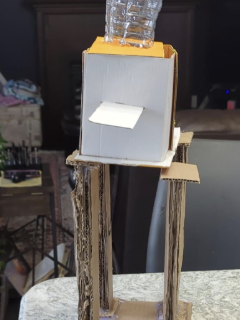
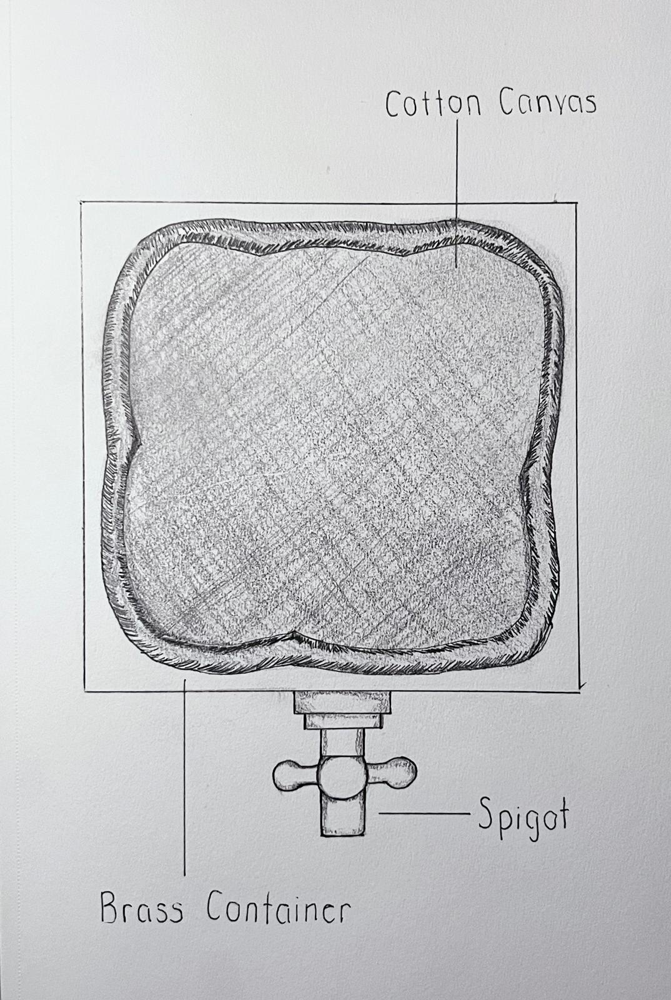

Overhead Watering System for Indoor Plants
Summary:
The Overhead Watering System project was initiated to address the needs of individuals who face difficulties in maintaining indoor plants due to physical disabilities or frequent absences from home. The system automates the watering process, employing sensors to administer water precisely when plants need it. Designed with sustainability in mind, it uses environmentally friendly materials and aims to conserve water by avoiding over-watering, making plant care effortless and more efficient.
Design Problem:
Traditional plant care methods can be challenging for individuals with mobility issues or those with busy lifestyles, often leading to either neglected plants or the inefficient use of water resources. Our goal was to develop a system that could autonomously take care of plants in any indoor environment, ensuring they receive optimal care without requiring constant human intervention. This system needed to be easy to install, operate, and maintain, while also being cost-effective and scalable to various indoor settings.
Design Process:
The development process began with targeted user research to gather insights into the specific needs of our audience. This was followed by iterative design sprints that involved rapid prototyping using recycled materials. Each prototype phase included user testing sessions, which provided critical feedback used to refine the system, focusing on usability, efficiency, and the precision of the watering mechanisms.
Concluding Evaluation:
This innovative system has proven to significantly reduce the workload associated with plant care, enhancing the quality of life for our users. It has been particularly noted for its reliability and environmental benefits. Ongoing developments aim to further optimize its water use and expand its capabilities with smart technology integrations.
Eco-Friendly Compost Bin
Summary:
This project introduced a compact, odorless compost bin tailored for urban residents, making composting an easy and accessible component of urban life. The bin's design is both user-friendly and environmentally conscious, encouraging sustainable waste management in tight spaces.
Design Problem:
We addressed the challenge of adapting composting solutions for urban environments, where space constraints and lifestyle pace often hinder traditional composting methods. Our solution needed to be efficient, aesthetically pleasing, and capable of fitting within small apartments without any foul odors.
Design Process:
Our approach was rooted in extensive market research to define the constraints and expectations of potential users. We then engaged in multiple prototyping rounds, each followed by rigorous testing to evaluate functionality and user satisfaction. Material choices were carefully considered to balance durability with environmental impact, ensuring the system remained sustainable and effective.
Concluding Evaluation:
The compost bin has been successfully adopted in urban settings and has received praise for its innovative design which seamlessly integrates into daily routines. It stands as a testament to the potential of design to solve specific lifestyle problems while promoting environmental sustainability. Future iterations will focus on improving material efficiency and integrating smart features to track compost readiness.
Reflections & Learnings on Overhead Watering System
What I accomplished: I led the development of an innovative overhead watering system designed to automate plant care for those with limited mobility or frequent absences, significantly enhancing daily life sustainability.
Challenges encountered: The main challenges included integrating eco-friendly materials that met functional requirements while ensuring the system was cost-effective and easy to use for our target demographic.
Adaptations: We shifted to an agile development approach, which involved cyclic prototyping and testing, allowing us to refine the system based on ongoing user feedback and environmental impact assessments.
Successful aspects: The iterative design process proved successful, particularly our user-centric approach that included frequent testing sessions with potential users, which were instrumental in fine-tuning the system's functionality.
Less successful aspects: Early prototypes struggled with mechanical reliability and efficient water use, which initially failed to meet our sustainability goals and required significant redesign.
Learnings: This project deepened my understanding of the complexities involved in designing user-friendly yet environmentally responsible products.
Contribution to UX design evolution: This project enhanced my skills in applying UX principles to solve real-world problems, particularly in the context of sustainability and accessibility.
Reflections & Learnings on Eco-Friendly Compost Bin
What I accomplished: I co-created an eco-friendly compost bin designed to facilitate urban composting, making it simpler and more accessible for city dwellers to engage in sustainable waste management.
Challenges encountered: We faced significant challenges in designing a compost bin that could fit in small spaces, remain odorless, and efficiently turn waste into compost without external inputs.
Adaptations: To overcome these challenges, we incorporated advanced materials that controlled odors and improved the composting process, while also making the bin aesthetically pleasing for indoor use.
Successful aspects: The integration of a user-friendly design that included easy disposal and retrieval mechanisms was well-received, as it addressed the primary user pain points identified through our research.
Less successful aspects: Initially, the cost of materials was higher than anticipated, which affected the project's scalability and potential market adoption.
Learnings: This project taught me valuable lessons in balancing functionality with eco-friendliness in product design, especially in a consumer market that values aesthetics and convenience.
Contribution to UX design evolution: Developing this compost bin allowed me to refine my approach to integrating environmental sustainability into product design, enhancing my ability to innovate within tight constraints.